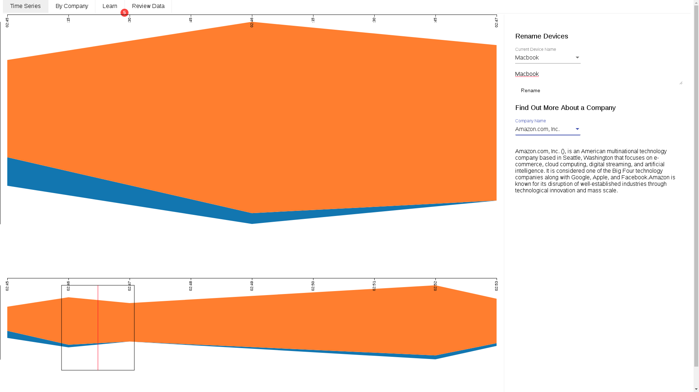
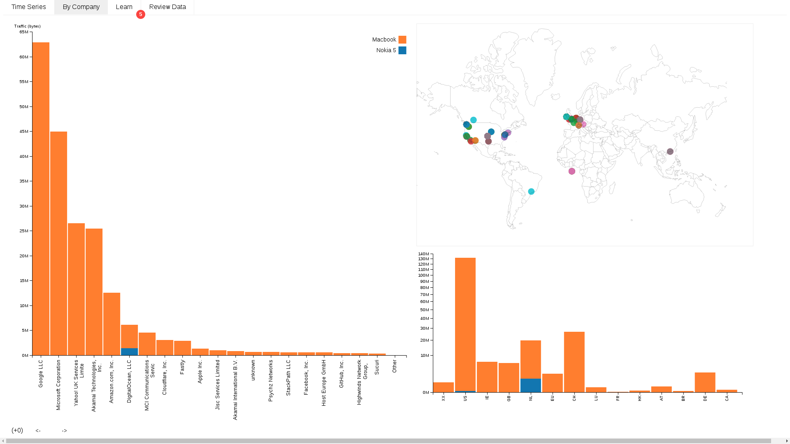

The time series tab has a slider you can use to see how much data devices are sending. This progresses in real time, so you can see the effect of using and connecting different devices.
There are also tools to the side of the time series that allow you to get information on different companies the privacy assitant has identified from your internet traffic, as well as renaming devices so that they're easier to spot in the interface.
The overview tab contains a bar chart of all the data your devices have sent to different companies since the beginning of the study. You can add or remove devices by clicking on them in the graph legend/key.
If there are too many companies, the graph will put the smaller ones into an 'other' category. To see what's in this category, you can use the two arrows at the bottom of the graph to pop companies on and off. This is also useful if a few companies are receiving so much data that others are being drowned out.
To the right of the main visualisation, there are also two geographic charts that show you where the data sent by your devices ends up.
